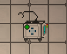
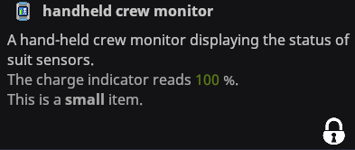
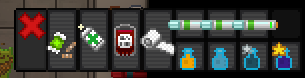
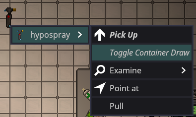
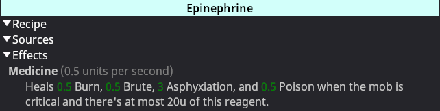

the ss14 quick medical reference guide by hoshizora aka Willow Yanagi
a quick reference guide for properly treating people in space station 14 (main fork/wizden servers) this assumes you already know the absolute basics of the game, such as damage thresholds for life/death/crit, how to scan people and how to use topicals/chemicals/medical beds but doesn't go into anything insanely advanced
BRUTE DAMAGE ⚠ Never inject a patient with any 2 different brute medicines, it will create razorium inside them and hurt them ⚠
Blunt Damage: Bruizine - 5u (heals 45 blunt over 20 seconds) OD = 10.5u
Slash Damage: Lacerinol - 5u (heals 40 slash and deals 4 heat over 20 seconds) OD = 12u
Pierce Damage: Puncturase - 5u (heals 50 pierce and deals 1 rad over 20 seconds) OD = 12u
TOXIN DAMAGE There is no general cure or topical for both types of toxin damage, they must be treated with chemicals individually
Poison Damage: Dylovene - 5u (heals 10 poison damage over 10 seconds) OD = 20u AND/OR Diphenhydramine - 5u (heals 30 poison damage over 10 seconds) No OD but is a somewhat advanced chemical, so chem isn't guaranteed to make it for you
Radiation Damage: Arithrazine - 5u (heals 30 radiation and deals 15 brute over 10 seconds) No OD but the brute damage is not negligible and should be treated with some bicaridine afterwards or during, depending on total damage.
BURN DAMAGE Includes Heat, Shock, Cold, and Caustic
General Damage: Ointment (5 heat, 5 shock, 5 cold, 1.5 caustic) Regenerative Mesh (10 heat, 10 shock, 10 cold, 10 caustic) Dermaline - 5u (heals 15 heat, 15 shock, 15 cold over 10 seconds) OD = 10u (DOES NOT HEAL ANY CAUSTIC)
Heat Damage: Pyrazine - 5u (heals 50 heat over 50 seconds) OD = 20u BE SURE TO CHECK BODY TEMP WITH HEALTH ANALYZER. If body temp is over 50C shove them in cryo without medicine to cool them off
Shock Damage: Insuzine - 5u (heals 30 shock over 20 seconds) OD = 12u
Cold Damage: Leporazine - 5u (heals 40 cold over 10 seconds) No OD
Caustic Damage: Sigynate - 5u (heals 25 caustic over 20 seconds) OD = 16u Siderlac - 5u (heals 100 caustic over 10 seconds) No OD, but requires botany to coordinate with chem which won't always happen
AIRLOSS DAMAGE Includes both bloodloss and asphyxiation, both damage types are taken care of by one medicine
General Damage: Dexalin plus - 5u (heals 65 asphyxiation and 65 bloodloss over 10 seconds) OD = 25u
Bloodloss Damage: BE SURE TO STOP BLEEDING WITH GAUZE FIRST Bloodloss damage is caused by having a blood level under 90%, which is listed near the top of the scanner window, dexalin does NOT heal blood level Blood Pack (heals 5% blood level) Saline - 5u (heals 20% blood level over 10 seconds) No OD
GENETIC DAMAGE Currently a rare form of damage with only one treatment outside of cryogenics
Cellular Damage: Phalanximine - 5u (heals 15 cellular damage and deals 7.5 radiation damage and 7.5 caustic damage over 50 seconds, 11u OD and cannot be mixed with arithrazine) Recently heavily nerfed, as it now has harsh side effects and works very slow, the cryogenic chemical Doxarubixadone should be used instead, explained on the cryogenics page. Can be used in an absolute emergency but is unlikely.
Pro Tips for Pro Moths
- DO NOT USE THE HYPOSPRAY TO APPLY AMBUZOL (NORMAL), 10U MUST BE INJECTED ALL AT ONCE TO CURE ZOMBIE INFECTION
- USE CRYOGENICS
USE IT!!!!!! CHECK THE GUIDE ITS SO GOOD PLEASE USE IT!!! It is especially good for when someone takes a damage type early on that you do not have chems for yet, like caustic damage or radiation damage (all stations start with cryoxadone roundstart) Damage from explosions is 3 different types of damage!! Perfect for cryo!! Put em in the tube!! Save topicals early on!! Use the fucking cryo!! Check the guide if you don't know how!!
- Anchor down your medibot and actively use it
Medibots inject 30u of Tricordrazine into alive targets under 50 total damage and 15u of Inaprovaline into crit targets, which reduces bleeding and airloss damage. THEY HAVE UNLIMITED MEDICINE and a single medibot can keep a single crit person stable indefinitely Tricordrazine doesn't work very fast so using it to heal someone at around 50 damage takes a long time but someone is under 30 total damage or so and doesn't have any caustic/genetic/radiation damage just drag them to the medibot and you shouldn't have to use any topicals or chemicals whatsoever

Anchor it with a wrench (which can fit into a medibelt) to make sure it doesn't escape. If the AI bugs out and it doesn't want to inject, it's probably trying to path to someone else so unanchor it and don't forget to reanchor once its done
- Ask for the handheld crew monitor (Paramedic)
This item spawns in the CMO's locker, and can be used to see the health state of everyone in the station with suit sensors on. The CMO is usually more concerned with the state of medbay rather than the state of the crew, so they should be fine with handing it over to you
Do be aware it is a steal target for traitors, so don't be surprised if you get mugged, whether you actually have it or not

- Make a mini chem reserve in your inventory
Most medbays will have a box of bottles somewhere, which hold 30u each and only take up a 1x1 in your inventory, while also fitting into the medical belt These are great for paramedic, allowing them to take chems on the go, or even just medical doctors anticipating a large influx of patients coming in with a certain damage type.

- Right click the hypospray to toggle container draw (CMO)
By toggling this option you can draw from containers like a syringe while holding the hypospray in your hand, 5u at a time, and it will also always inject on bodies. If you right click the chem jug stack then left click, the dropdown will disappear and you'll have to right click again, so its better for when you're making a quick mix or just need 5u of something.

- Use epinepherine!!
Epinepherine is an extremely good chemical for crit people, not only keeping them alive but also healing a multitude of damage types. AND you get plenty of it for free Just look at it!! It heals all brutes, all burns, lots of airloss, and poison. It ODs at 20u so be careful, but certainly give 5-10u to any patient depending on how far into crit they are

- Go for a space walk with cryoxadone, no internals needed!
Cryoxadone works when your body temperature is low, and heals all spaceing damage at an incredibly high rate, including airloss. In an absolute disaster, snag some cryox and escape outside and inject/drink it when you get low on health, cryox is so effective that you can restore health even while taking space damage!! DISCLAIMER: Bug Medical is not responsible for any meteor/space debris related deaths